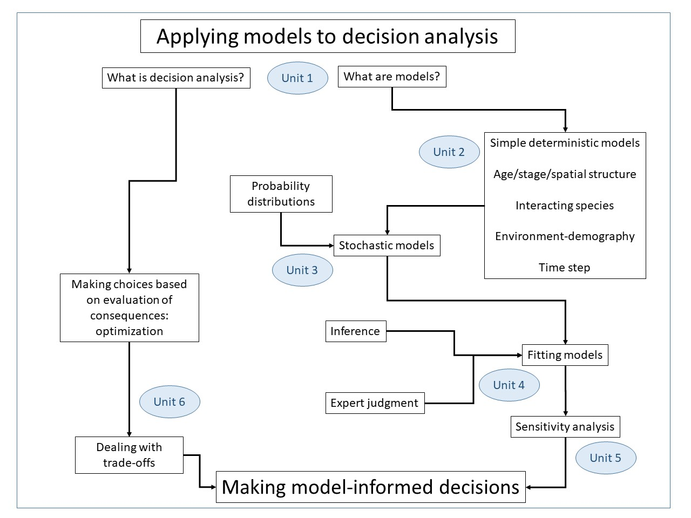

Unit 1. SDM and Models
Making wise decisions about managing natural resources requires an understanding of the potential consequences of those decisions. Understanding the consequences means making a guess about what will happen in the future, and how that future is likely to be affected by decisions you make. For simple decisions we can often make fairly accurate guesses about the consequences using our intuition, but most important natural resource management questions do not involve simple decisions.
For more complicated decisions it is often very helpful to have a formal method for forecasting what might happen when a choice is made. The most important and widely used method for forecasting involves building computer simulation models that mimic the real world and allow modelers to ask "what if".
This course introduces you to the types of computer simulation models that are frequently used to inform decisions about management of fish and wildlife populations. The course goal is to provide you with the knowledge you need to begin building your own models of the systems that matter to you, and to use those models to inform the process of making a resource management decision.
Watch this video to learn more about the overall structure of the course
Video 1: Introduction to the course

Overview of the elements of the course
This is not a general systems modeling course. If you get a textbook on modeling, even one specifically on ecological modeling, from the nearest university library, you will find its contents to be different from the content of this course. Of course there will be overlap, but there will be lots of topics covered in the textbook that we won't be covering here. Our focus will be on management of fish and wildlife populations, and there are topics covered in modeling texts that aren't especially relevant to our focus - for example biogeochemical cycling of nutrients. We will be focusing on what you need to know to build a model that can be used in the "consequences" phase of a decision making process, where the decisions being made are about the management of a fish or wildlife population.
Participants in this course will need to:
If you don’t meet these prerequisites but are still interested and believe you could benefit from the course, please contact us to discuss your previous experience so we can determine whether you might in fact have a sufficient background to be able to succeed in this course..
Participants will likely find the course more relevant to their interests if they already have some experience with the process of managing populations, such as setting harvest limits, determining stocking levels, or setting targets for invasive species control.
For this course we will be working exclusively with R inside RStudio. R and RStudio are both open-source software that is freely available for PC, Mac, and Linux platforms. R is a programming language, RStudio is a programming environment designed for R. R is also being increasingly used by natural resource management and ecologists (likely due to it being free) and we at the Quantitative Fisheries Center are of the opinion that facilitating its use will directly benefit natural resource agencies. The other advantage of using R is that there is an extensive library of functions for conducting all types of analyses and we can take advantage of these functions without having to program them ourselves.
Starting with Unit 2, you will be completing assignments that involve developing and applying model code using R. When you set up your RStudio project folder for the course (see introduction to Unit 2 for more on this), you will be able to download:
Needless to say, the latter two are there for you to look at after you have tried to complete the assignment. Sometimes, however, you might want to look at them if you get stuck on an assignment or can't figure out why what you're seeing doesn't make sense. In fact we encourage you to do so, rather than get frustrated! And of course you can always contact the instructor.
When you enroll in this course, you will be given access to the MSU Library system. This course will make reference to several journal articles that you can download from the library. All you need to do is go to the MSU electronic journals page here, and type in the name of the journal you wish to access in the "Find electronic journals by title..." box. When you find the journal you're looking for, select a publisher and go to their web site - you will need to use your MSU guest ID and login to access their site and download documents.
This is an asynchronous, self-paced course. We expect students to complete the material in less than six months. In all likelihood, taking longer will negatively affect retention of the material. We will occasionally send reminders to students who have been inactive in the course for a few weeks, but it is your responsibility to stay engaged. Here are some additional expectations and responsibilities for both you and the instructor.
Written or other work which a student submits in a course, shall be the product of his/her/their own efforts. Plagiarism, cheating, and all other forms of academic dishonesty are prohibited. Students are expected to adhere to the ethical and professional standards associated with their programs and academic courses. All applicable portions of Michigan State’s Policy on Academic Integrity apply to non-credit courses such as this one. See https://ombud.msu.edu/resources-self-help/academic-integrity for details.
You are expected to log in to the class at least once a week. Logging in allows you to stay updated and see new announcements.
Please note that not all course lessons are the same length. Our goals with regard to participation/progress are to (a) keep you engaged in the course, (b) enhance the overall learning environment by promoting student-teacher communication, and (c) avoid a last minute time crunch for everyone involved. We will not be sympathetic or make allowances for your failure on course tasks or deadlines that result from not seeing announcements because you had not accessed the course for an extended period, and had not told us you would be away from the internet.